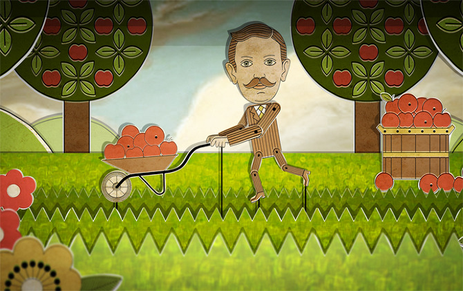
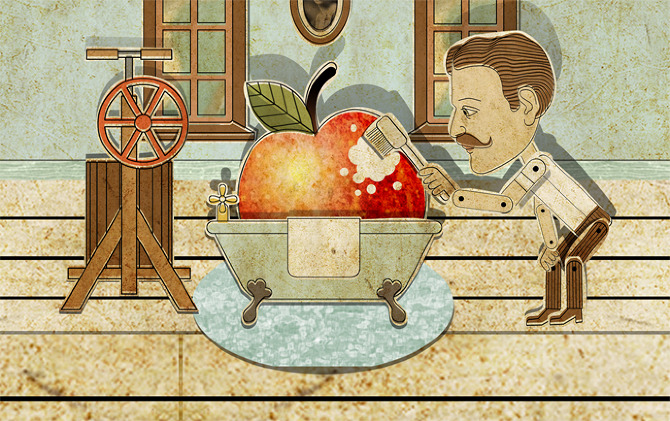
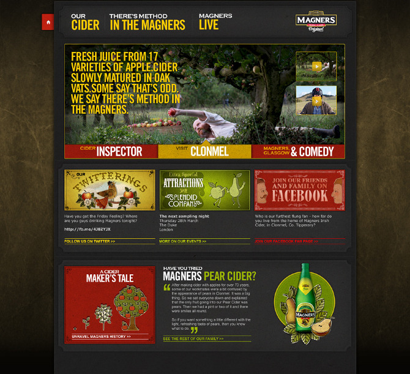
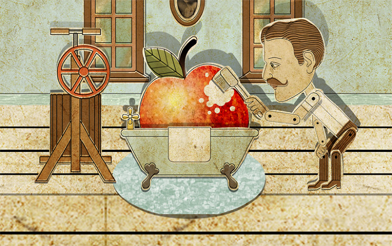
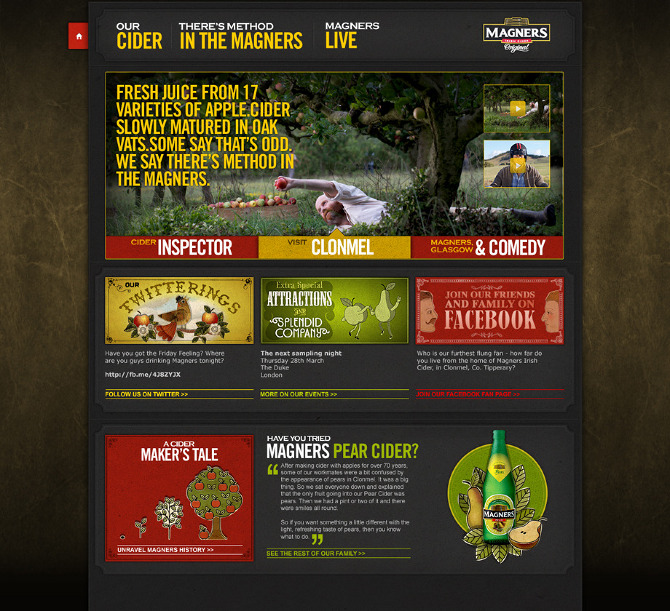

MAGNERS
Art Direction for the overhaul of the Magners UK website. One of the main purposes of the site is to explain the history and the brewing process of Magners cider. To fit with the historical and storytelling nature of the site's content, I chose an illustrative style with a vintage puppet show / pop up book feel. The art direction was carried over into various other parts of the campaign including a facebook game, an iphone app and large outdoor graphics for promotional events.
 


